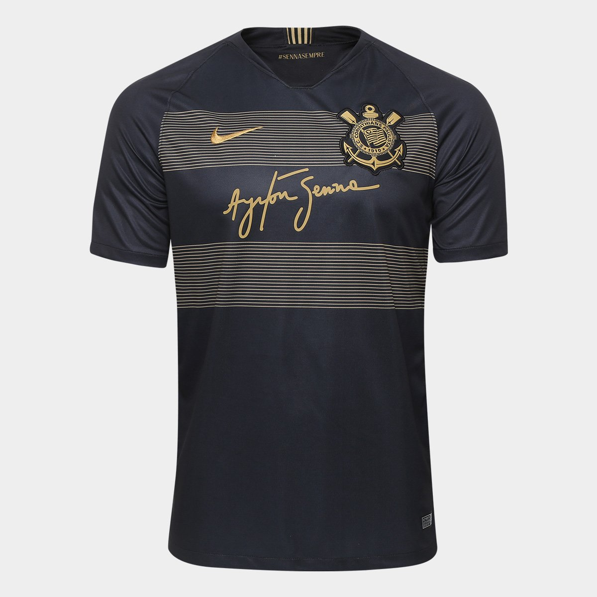

R$ 159,90
A camiseta do Corinthians em homenagem a Ayrton Senna é uma peça especial que celebra a união entre o futebol e o automobilismo, dois dos esportes mais amados no Brasil. Inspirada no legado do icônico piloto brasileiro, a camisa apresenta detalhes que remetem à sua famosa Lotus preta e dourada, que ele pilotou no início de sua carreira na Fórmula 1. A camisa é predominantemente preta, com detalhes em dourado, refletindo a clássica combinação de cores que ficou marcada na história de Senna. A peça inclui o autógrafo de Ayrton Senna estampado na região do peito, além de listras horizontais em dourado que lembram o design do carro. Na parte interna da gola, é possível ver a famosa frase "Senna Sempre" — uma homenagem que resgata o legado e o espírito vencedor do piloto. Além disso, o escudo do Corinthians também possui detalhes dourados, criando uma conexão visual entre o clube e o piloto. Esta camisa não só homenageia Ayrton Senna como também é um símbolo de superação, garra e paixão, valores que tanto o piloto quanto o Corinthians representam.